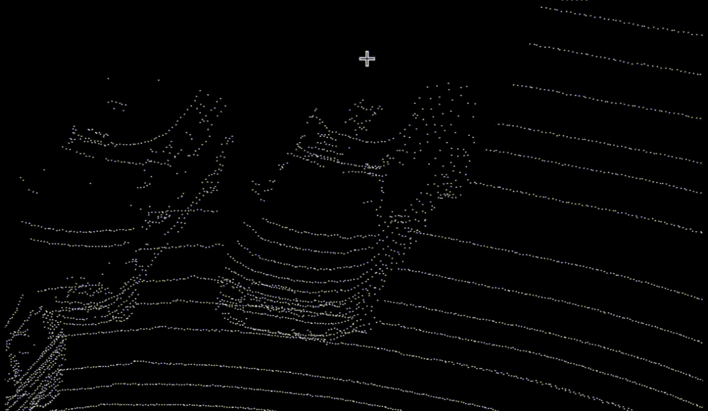
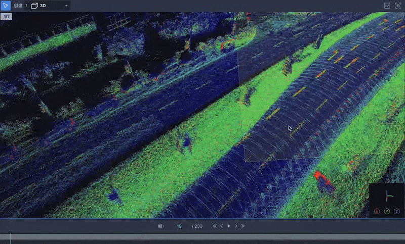

Professional Overview
Software engineer with 8+ years of experience building infrastructure for autonomous systems, robotics, and computer vision. Currently at Wing (Alphabet), working on safety-critical airspace and operational systems for autonomous drone delivery.
Previously led development of 3D point-cloud annotation systems adopted by 20+ autonomous-vehicle and robotics customers.
Impact at a Glance
10×
Operator capacity
16 → 160 drones
99.99%
Platform stability
while operating as sole backend engineer
20+
AV / robotics customers
on 3D annotation platform
56%
Lower labeling cost
through workflow analytics
Selected Projects
01
Autonomous Aviation Infrastructure
WingBackend for Wing’s operator-facing aviation platform — the “Google Maps for the sky” that governs when and where autonomous aircraft may fly.
Problem
Drone delivery must enforce spatial, temporal, and regulatory constraints in real time, across multiple operating regions.
My Role
Built the backend for OpenSky — handlers, validators, testing, data migration — coordinating frontend and backend work across teams.
Technical Work
- Translated FAA and international regulatory rules into backend enforcement code.
- Built handlers and validators for 4D (3D + time) airspace restriction enforcement.
- Integrated real-time aircraft tracking, flight-path visualization, and compliance monitoring with Google Maps and internal data sources.
- Added an intelligent layer turning live telemetry into operational guidance (emergency landing, temporary restrictions), plus an AI copilot for on-call incident triage.
Impact
- 16 → 160 drones per operator; lower labor costs; FAA and CASA approvals unlocked in new cities.
- 99.99% platform stability as sole backend engineer while shipping roadmap features.
- Blackbox monitoring with failure injection for emergency-landing commands (sub-second alerts), adopted by other safety-critical teams at Wing.
02
AI Multi-Drone Coordination
WingNatural-language control of multiple drones — intent in, executable multi-drone tasks out.
Problem
Operating several drones still required pre-programmed instructions per task; general-purpose missions needed a more flexible interface.
My Role
Led a proof-of-concept agentic coordination system with iterative planning review, human-in-the-loop escalation, and safety validation.
Technical Work
- LLM/VLA planning translates natural-language intent into executable drone tasks.
- Fuses real-time sensor data with object detection and tracking into a shared environment model.
- Integrated 3D visualization and simulation; text descriptions generate custom 3D test environments.
- Logs commands, reasoning, actions, and feedback into a reinforcement-learning dataset for continuous improvement.
Impact
- General-purpose multi-drone tasks without pre-programmed instructions.
- Low-latency control-model interface designed for real-drone deployment.
03
Safety-Critical Configuration & Authorization
WingRe-architected a legacy authorization/configuration system into independently managed domains — with zero downtime and full backward compatibility.
Problem
The legacy auth module, built on Google Zanzibar and Baggins, was complex and failure-prone due to synchronization dependencies; it had to be modernized without interrupting safety-critical operations.
My Role
Led the design and implementation of configuration schemas and validation mechanisms.
Technical Work
- Decomposed the monolith into three services: Organization, User, and Member License Management.
- Centralized permissions into configuration with schema validation that prevents user error.
- Role-based permission checks optimized for low-latency paths (e.g., pilot-issued emergency landing).
Impact
- Zero-downtime migration; synchronization failures eliminated.
- Operational effort cut from hours to minutes; lower authorization latency.
04
3D Perception & Annotation Platform
AppenFull-stack 3D point-cloud annotation platform for autonomous-vehicle perception teams — led from prototype to production.


Problem
State-of-the-art detection models needed extensive labeling, yet annotating large LiDAR scenes was slow — and heavy scenes crashed browsers.
My Role
Led full-stack development (React/Three.js frontend, Flask/Spring backend) and drove ML-assisted annotation from prototype to production.
Technical Work
- Click-to-annotate: fast DBSCAN clustering on k-d trees auto-generates bounding boxes.
- GPU shaders for point coloring plus octree frustum culling: smooth rendering from 1M to 10M+ points.
- Semantic segmentation for point-level classification; real-time AI-assisted interaction.
- Annotator-telemetry dashboards giving operations teams visibility into worker bottlenecks.
- Sensor fusion experiments: real-time projection of 3D LiDAR points into 2D camera views; multi-sensor (LiDAR, radar, camera) fusion supporting annotation accuracy.
Impact
- 35% faster annotation; 20+ AV/robotics clients — flagship product born from a hackathon-weekend prototype.
- 56% lower labeling costs through workflow analytics.
Credentials
- Master's and Bachelor's degrees in Computer Science
- EB-2 National Interest Waiver (NIW) for contributions to autonomous / uncrewed systems and robotics
- Google C++ Readability